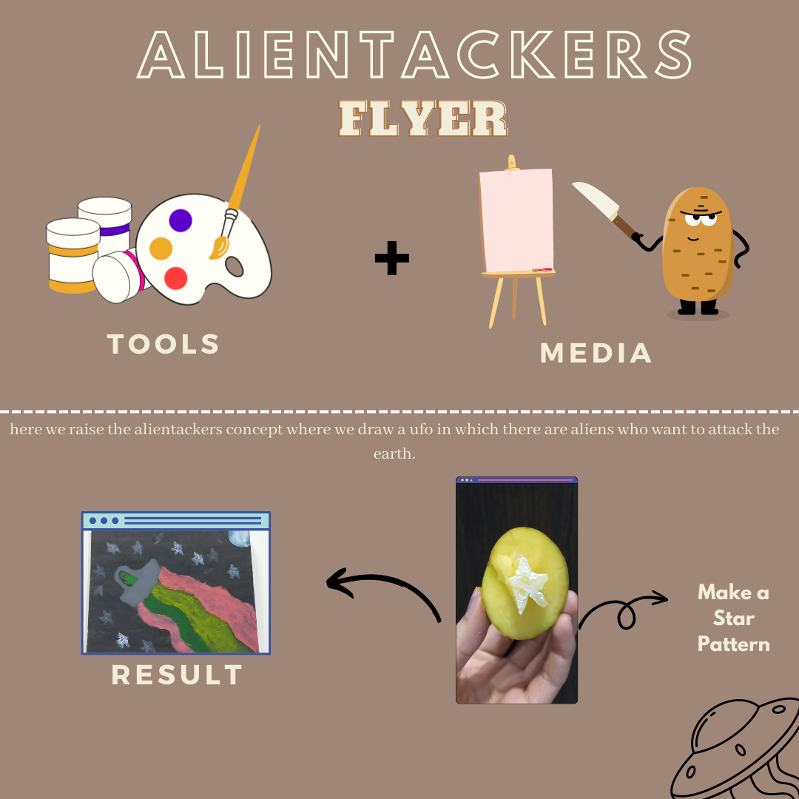

A l i e n
A t t a c k e r s !
Halo, Selamat datang di project kami yang bertema Alien Attackers atau yang disingkat sebagai judul kami AlienTackers! Pada project kali ini, kami menggunakan teknik cetak tinggi untuk membuat objek yang banyak seperti bintang
Apa sih itu Cetak Tinggi? teknik cetak dalam seni grafis, termasuk di dalamnya teknik cukil kayu, di mana bagian matriks yang akan mencetak warna adalah pada permukaan aslinya; bagian yang tak berwarna adalah bagian yang dicukil. Dimana kami disini menggunakan kentang sebagai media cetak tinggi
Makna Dari Project Kami
Sebuah alien yang sedang berusaha untuk menghancurkan bumi dan mengambil alih kekuasaan bumi dari manusia, karena didalam bumi terdapat banyak sumber daya alam yang berguna untuk peradaban alien. Mengetahui hal tersebut para penghuni luar angkasa berusaha menghalang aksi jahat dari alien tersebut. Terlihat para bintang mulai berkumpul untuk menghalau pesawat alien yang sedang ingin memasuki bumi. Terlihat jarak alien dengan bumi sudah sangat dekat, karena bulan yang ada di atas pesawat ufo milik alien tersebut sudah nampak jauh.
.jpeg)
Poster Dari Project Kami
Kami menggunakan alat cat akrilik, kuas, dan pisau sebagai alat cukil. Lalu kami menggunakan media kanvas sebagai media melukis, dan kami menggunakan kentang sebagai media cetak tinggi yang akan dicukil oleh pisau.
